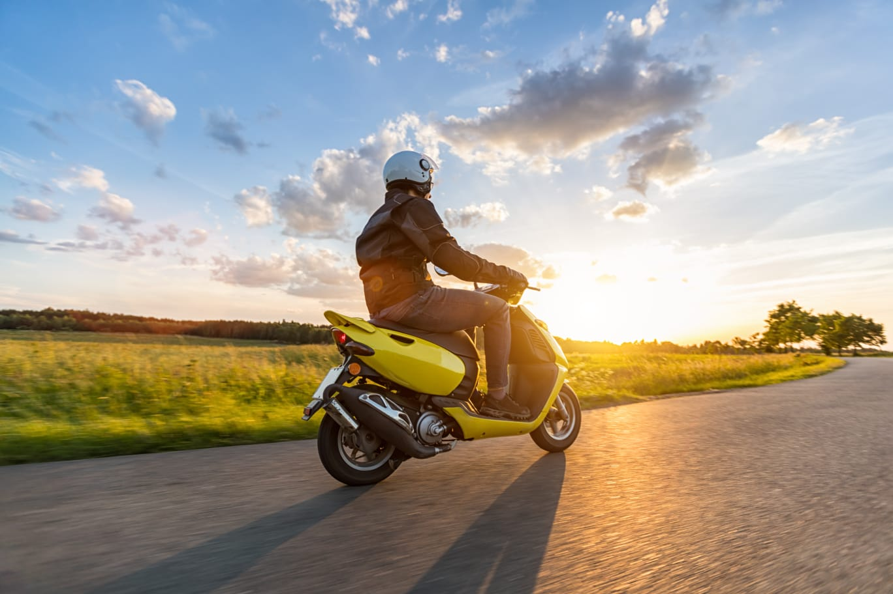

Nama: Muhammad Hasbi Asshidiqi Tempat Tanggal Lahir: Cirebon, 16 Oktober 2003 Jenis Kelamin: Laki-laki Agama: Islam Alamat: Ciwaruga
Motto Hidup
"Saya percaya bahwa keberanian adalah kuncinya.
Dalam setiap langkah hidup, saya berkomitmen untuk menjadi perubahan yang saya inginkan lihat di dunia. Saya tidak takut untuk mencoba hal-hal baru, meskipun risikonya besar.
Bagi saya, keberanian bukanlah tentang tidak memiliki ketakutan, tetapi tentang bertindak meskipun ketakutan itu ada.
Saya percaya bahwa setiap hari adalah kesempatan baru untuk menjadi lebih baik dan memberikan dampak positif pada lingkungan sekitar.
Dengan sikap ini, saya menghadapi tantangan dengan tekad dan optimisme, membiarkan nilai-nilai integritas dan kebaikan memandu langkah-langkah saya.
Melalui komitmen untuk terus bergerak maju dan menjaga akar yang kuat, saya yakin bahwa saya dapat mencapai impian saya dan memberikan kontribusi yang berarti pada dunia ini."
Hobi

Saya sangat suka menonton film, bermain game, dan traveling
Kemampuan Teknis
Kemampuan teknis yang saya miliki adalah saya bisa membuat program dengan menggunakan bahasa C,
Python, Java, CSS, HTML, walaupun semuanya masih dasar.
Lesson Learned
Dalam pertemuan kali ini, saya banyak mendapatkan ilmu baru terutama pada penggunaan gitHub. dan saya juga mengembangkan
kreativitas saya pada membuat web sederhana dengan html dan css
Harapan setelah lulus
Setelah lulus dari Teknik Informatika, harapan saya adalah dapat menjelajahi dunia teknologi dengan lebih dalam dan luas.
Saya berharap untuk menemukan peluang yang memungkinkan saya untuk terlibat dalam proyek-proyek inovatif yang memecahkan masalah dunia nyata menggunakan keahlian dan pengetahuan yang saya miliki.
Selain itu, saya berharap dapat terus belajar dan berkembang secara profesional, baik melalui pengalaman kerja di industri maupun melalui studi lanjutan seperti program magister atau sertifikasi tambahan.
Selain itu, saya berharap dapat memberikan kontribusi positif bagi masyarakat melalui penggunaan teknologi untuk memperbaiki proses bisnis, layanan publik, atau masalah sosial.
Akhirnya, harapan saya adalah untuk mencapai kesuksesan yang berarti dalam karier saya dan menjadi sumber inspirasi bagi generasi mendatang di bidang Teknik Informatika.